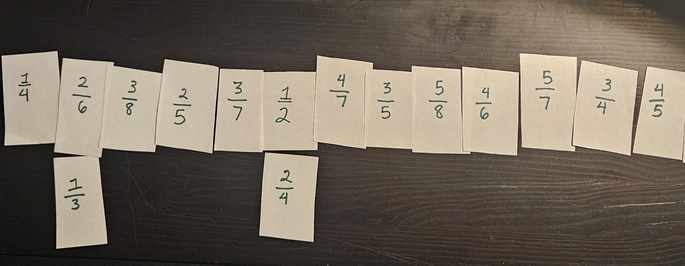

How to Play the Game
Materials and Preparation
Overview
Play a game to add by practicing fraction comparison!
- Create 15 cards with fractions less than 1 whose denominators are numbers up to 10. Make sure that one of the cards is the fraction 1/2.
- Put the 1/2 card in the middle of the table.
- Shuffle the cards and give each person 10 cards
- Take turns placing in numerical order compared to the value of other cards. If the cards have the same value, place it below the card already placed.
- Work together to ensure that the card is in the correct place. You can use models or technology to help determine that the cards are in order.
- The game is won when all of the cards are correctly placed.
Before You Start
Materials
- A pencil and paper
- Number cards from 1-10
Preparation
- Pull two cards from the pile.
-
Write the smaller number as the numerator and the larger
number as the denominator of a fraction on a small piece of
paper.

-
Repeat until you have 15 small pieces of paper with distinct
fractions on them.

Make it Easier or Harder
Make Game Easier
- Reduce the total number of cards to 11.
- Limit the number of fraction denominators to 2, 4, and 8.
- Give more benchmarks by placing 0, 1/4, 3/4, and 1 on the table at the beginning.
- Help your child to change all the fractions to common denominators before playing the game.
Make Game More Challenging
- Increase the total number of cards to 21.
- Include fractions with denominators 7, 9, and 10.
- Ask your child to draw a model of each of the fractions on the cards as they go.
- Include fractions greater than 1.